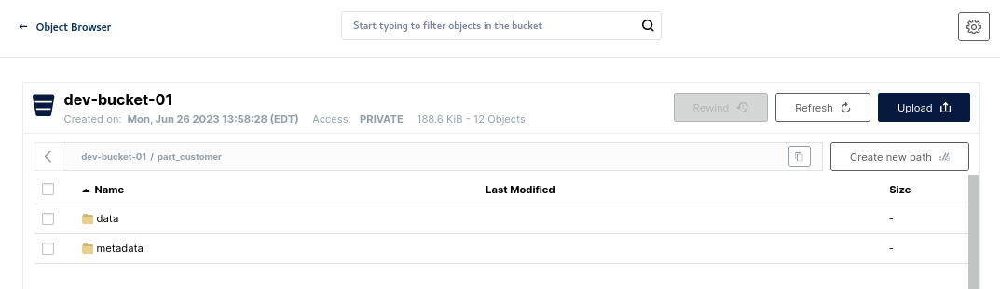

Analytic Workloads
Watsonx.data is based on open source PrestoDB, a distributed query engine that enables querying data stored in open file formats using open table formats for optimization and performance. Some of the characteristics which you will learn and see in action include:
- Compute processing is performed in memory and in parallel.
- Data is pipelined between query stages and over the network reducing latency overhead that one would have if disk I/O were involved.
Executing and analyzing analytic workloads
Let us start with some simple examples of running queries and analyze the execution. We can either use the dBeaver interface or the watsonx.data CLI. We will eventually be able to use the watsonx.data console UI as well but for the moment it is under construction.
Connect to watsonx.data
Make sure you are the root user and change to the development directory.
cd /root/ibm-lh-dev/bin
Open the Presto CLI.
Note: The workshop schema was created as part of the introduction to Minio. If you have not run that lab, the schema will not be available. Please see the Introduction to Minio section.
./presto-cli --catalog iceberg_data --schema workshop
Run a simple scan query which selects customer names and market segment.
select
name, mktsegment
from
customer
limit 3;
name | mktsegment
--------------------+------------
Customer#000000376 | AUTOMOBILE
Customer#000000377 | MACHINERY
Customer#000000378 | BUILDING
(3 rows)
To understand the query execution plan we use the explain statement.
explain select name, mktsegment from customer;
- Output[name, mktsegment] => [name:varchar, mktsegment:varchar]
Estimates: {rows: 1500 (15.85kB), cpu: 16230.00, memory: 0.00, network: 16230.00}
- RemoteStreamingExchange[GATHER] => [name:varchar, mktsegment:varchar]
Estimates: {rows: 1500 (15.85kB), cpu: 16230.00, memory: 0.00, network: 16230.00}
- TableScan[TableHandle {connectorId='iceberg_data', connectorHandle='workshop.customer$data@Optional[7053670466726060568]', layout='Optional[workshop.customer$data@Optional[7053670466726060568]]'}] => [name:varchar, mktsegment:varchar]
Estimates: {rows: 1500 (15.85kB), cpu: 16230.00, memory: 0.00, network: 0.00}
mktsegment := 7:mktsegment:varchar (1:38)
name := 2:name:varchar (1:38)
What you see above is the hierarchy of logical operations to execute the query.
Explain the query and focus on IO operations.
explain (type io) select name, mktsegment from customer;
{
"inputTableColumnInfos" : [ {
"table" : {
"catalog" : "iceberg_data",
"schemaTable" : {
"schema" : "workshop",
"table" : "customer"
}
},
"columnConstraints" : [ ]
} ]
}
Explain physical execution plan for the query.
explain (type distributed) select name, mktsegment from customer;
Fragment 0 [SINGLE]
Output layout: [name, mktsegment]
Output partitioning: SINGLE []
Stage Execution Strategy: UNGROUPED_EXECUTION
- Output[name, mktsegment] => [name:varchar, mktsegment:varchar]
Estimates: {rows: 1500 (15.85kB), cpu: 16230.00, memory: 0.00, network: 16230.00}
- RemoteSource[1] => [name:varchar, mktsegment:varchar]
Fragment 1 [SOURCE]
Output layout: [name, mktsegment]
Output partitioning: SINGLE []
Stage Execution Strategy: UNGROUPED_EXECUTION
- TableScan[TableHandle {connectorId='iceberg_data', connectorHandle='workshop.customer$data@Optional[7053670466726060568]', layout='Optional[workshop.customer$data@Optional[7053670466726060568]]'}, grouped = false] => [name:varchar, mktsegment:varchar]
Estimates: {rows: 1500 (15.85kB), cpu: 16230.00, memory: 0.00, network: 0.00}
mktsegment := 7:mktsegment:varchar (1:57)
name := 2:name:varchar (1:57)
A fragment represents a stage of the distributed plan. The Presto scheduler schedules the execution by each stage, and stages can be run on separate instances.
Create explain statement in a visual format.
explain (format graphviz) select name, mktsegment from customer;
digraph logical_plan {
subgraph cluster_0 {
label = "SINGLE"
plannode_1[label="{Output[name, mktsegment]|Estimates: \{rows: ? (?), cpu: ?, memory: ?, network: ?\}
}", style="rounded, filled", shape=record, fillcolor=white];
plannode_2[label="{ExchangeNode[GATHER]|name, mktsegment|Estimates: \{rows: ? (?), cpu: ?, memory: ?, network: ?\}
}", style="rounded, filled", shape=record, fillcolor=gold];
plannode_3[label="{TableScan | [TableHandle \{connectorId='iceberg_data', connectorHandle='workshop.customer$data@Optional[7053670466726060568]', layout='Optional[workshop.customer$data@Optional[7053670466726060568]]'\}]|Estimates: \{rows: ? (?), cpu: ?, memory: ?, network: ?\}
}", style="rounded, filled", shape=record, fillcolor=deepskyblue];
}
plannode_1 -> plannode_2;
plannode_2 -> plannode_3;
}
We are going to format the output from the explain statement and display it as a graphic. Quit Presto.
quit;
cat <<EOF >/root/ibm-lh-dev/localstorage/volumes/infra/explain.sql
explain (format graphviz) select name, mktsegment from customer;
EOF
./presto-cli --catalog iceberg_data --schema workshop --file /mnt/infra/explain.sql > /tmp/plan.dot
cat /tmp/plan.dot | sed 's/""/"/g' | sed -z 's/"//' | sed '$s/"//' > /tmp/fixedplan.dot
dot -Tpng /tmp/fixedplan.dot > /tmp/plan.png
Open a separate terminal window and issue the following command (using the SSH port number and server name supplied in your reservation).
Mac OSX user
scp -port watsonx@region.techzone-server.com:/tmp/plan.png plan.png && open plan.png
Windows user
scp -port watsonx@region.techzone-server.com:/tmp/plan.png plan.png & start "" "plan.png"
Linux user (watsonx.data server)
eog /tmp/plan.png
Creating a Table with User-defined Partitions
Connect to Presto with the Workshop Schema.
./presto-cli --catalog iceberg_data --schema workshop
create table iceberg_data.workshop.part_customer
with (partitioning = array['mktsegment'])
as select * from tpch.tiny.customer;
quit;
Inspect object store directory/object/file structure
Open your browser and connect to the MinIO console.
If you forget the userid and password, use the following command to extract them or use the passwords command.
export LH_S3_ACCESS_KEY=$(docker exec ibm-lh-presto printenv | grep LH_S3_ACCESS_KEY | sed 's/.*=//')
export LH_S3_SECRET_KEY=$(docker exec ibm-lh-presto printenv | grep LH_S3_SECRET_KEY | sed 's/.*=//')
echo "MinIO Userid : " $LH_S3_ACCESS_KEY
echo "MinIO Password: " $LH_S3_SECRET_KEY

Select iceberg-bucket. You will see two tables, customer and part_customer.

Select part_customer.

Then select data.

Examining the part_customer, you will notice is the data is split into multiple parquet files stored across multiple directories - a single directory for each unique value of the partition key.
Predicate query to utilize partitions
Connect to Presto with the Workshop Schema.
./presto-cli --catalog iceberg_data --schema workshop
select
*
from
iceberg_data."workshop".part_customer
where
mktsegment='MACHINERY';
custkey | name | address | nationkey | phone | acctbal | mktsegment | comment
---------+--------------------+------------------------------------------+-----------+-----------------+---------+------------+----------------------------------------------------------------------------------------------------------------------
1131 | Customer#000001131 | KVAvB1lwuN qHWDDPNckenmRGULDFduxYRSBXv | 20 | 30-644-540-9044 | 6019.1 | MACHINERY | er the carefully dogged courts m
1133 | Customer#000001133 | FfA0o cMP02Ylzxtmbq8DCOq | 14 | 24-858-762-2348 | 5335.36 | MACHINERY | g to the pending, ironic pinto beans. furiously blithe packages are fina
1141 | Customer#000001141 | A6uzuXpgRPp19ek8K8zd5O | 22 | 32-330-618-9020 | 0.97 | MACHINERY | accounts. furiously pending deposits cajole. c
1149 | Customer#000001149 | 5JOAwCy8MD70TUZJDyxgEBMe | 3 | 13-254-242-3889 | 6287.79 | MACHINERY | ress requests haggle carefully across the fluffily regula
1150 | Customer#000001150 | fUJqzdkQg1 | 21 | 31-236-665-8430 | -117.31 | MACHINERY | usly final dolphins. fluffily bold platelets sleep. slyly unusual attainments lo
1155 | Customer#000001155 | kEDBn1IQWyHyYjgGGs6FiXfm3 | 8 | 18-864-953-3058 | 3510.25 | MACHINERY | ages? fluffily even accounts shall have to boost furiously alongside of the furiously pendin
1158 | Customer#000001158 | btAl2dQdvNV9cEzTwVRloTb08sLYKDopV2cK,p | 10 | 20-487-747-8857 | 3081.79 | MACHINERY | theodolites use stealthy asymptotes. frets integrate even instructions. car
1161 | Customer#000001161 | QD7s2P6QpCC6g9t2aVzKg7y | 19 | 29-213-663-3342 | 591.31 | MACHINERY | ly alongside of the quickly blithe ideas. quickly ironic accounts haggle regul
1165 | Customer#000001165 | h7KTXGSqsn0 | 9 | 19-766-409-6769 | 8177.33 | MACHINERY | jole slyly beside the quickly final accounts. silent, even requests are stealthily ironic, re
1166 | Customer#000001166 | W4FAGNPKcJFebzldtNp8SehhH3 | 17 | 27-869-223-7506 | 507.26 | MACHINERY | before the platelets! carefully bold ideas lose carefully
1169 | Customer#000001169 | 04YQNIYyRRFxUnJsTP36da | 4 | 14-975-169-9356 | 7503.3 | MACHINERY | into beans doubt about the slyly ironic multipliers. carefully regular requests breach theodolites. special packages
1188 | Customer#000001188 | PtwoF3jNQ9r6 GbPIelt GvbNBuDH | 15 | 25-108-989-8154 | 3698.86 | MACHINERY | ts. quickly unusual ideas affix aft
1190 | Customer#000001190 | JwzW9OtxFRXDnVo5hXl8 2A5VxH12 | 15 | 25-538-604-9042 | 2743.63 | MACHINERY | regular deposits according to the pending packages wake blithely among the silent inst
1203 | Customer#000001203 | 9pTq4gggfKoSqQetn0yJR | 16 | 26-370-660-6154 | 5787.69 | MACHINERY | osits nag furiously final accounts. silent pack
... Many more rows
Due to the partitioning of this table by mktsegment, it will completely skip scanning a large percentage of the objects in the object store.
We run an explain against this query using the following command.
explain (format graphviz)
select * from iceberg_data."workshop".customer
where mktsegment='MACHINERY';
Query Plan
-----------------------------------------------------------------------------------------------------------------------------------------------------------------------------------------------------------------------------------------------------------------------------------------------------------------
digraph logical_plan {
subgraph cluster_0 {
label = "SINGLE"
plannode_1[label="{Output[custkey, name, address, nationkey, phone, acctbal, mktsegment, comment]|Estimates: \{rows: 750 (56.84kB), cpu: 232830.00, memory: 0.00, network: 58207.50\}
}", style="rounded, filled", shape=record, fillcolor=white];
plannode_2[label="{ExchangeNode[GATHER]|custkey, name, address, nationkey, phone, acctbal, mktsegment, comment|Estimates: \{rows: 750 (56.84kB), cpu: 232830.00, memory: 0.00, network: 58207.50\}
}", style="rounded, filled", shape=record, fillcolor=gold];
plannode_3[label="{Filter|(mktsegment) = (VARCHAR'MACHINERY')|Estimates: \{rows: 750 (56.84kB), cpu: 232830.00, memory: 0.00, network: 0.00\}
}", style="rounded, filled", shape=record, fillcolor=yellow];
plannode_4[label="{TableScan | [TableHandle \{connectorId='iceberg_data', connectorHandle='workshop.customer$data@Optional[7230522396120575591]', layout='Optional[workshop.customer$data@Optional[7230522396120575591]]'\}]|Estimates: \{rows: 1500 (113.69kB), cpu: 116415.00, memory: 0.00, network: 0.00\}
}", style="rounded, filled", shape=record, fillcolor=deepskyblue];
}
plannode_1 -> plannode_2;
plannode_2 -> plannode_3;
plannode_3 -> plannode_4;
}
To visualize this, we are going to run this command and place the results into a temporary file. Exit Presto.
quit;
cat <<EOF >/root/ibm-lh-dev/localstorage/volumes/infra/explain.sql
explain (format graphviz) select * from iceberg_data."workshop".customer where mktsegment='MACHINERY';
EOF
./presto-cli --catalog iceberg_data --schema workshop --file /mnt/infra/explain.sql > /tmp/plan.dot
cat /tmp/plan.dot | sed 's/""/"/g' | sed -z 's/"//' | sed '$s/"//' > /tmp/fixedplan.dot
dot -Tpng /tmp/fixedplan.dot > /tmp/plan.png
Open a separate terminal window and issue the following command (using the SSH port number and server name supplied in your reservation).
Mac OSX user
scp -port watsonx@region.techzone-server.com:/tmp/plan.png plan.png && open plan.png
Windows user
scp -port watsonx@region.techzone-server.com:/tmp/plan.png plan.png & start "" "plan.png"
Linux user (watsonx.data server)
eog /tmp/plan.png

Joins and Aggregations
This section will create an orders table to test joins and aggregations.
Start Presto CLI with Workshop Schema.
./presto-cli --catalog iceberg_data --schema workshop
Create the Orders Table.
create table iceberg_data.workshop.orders as
select * from tpch.tiny.orders;
CREATE TABLE: 15000 rows
Use a Windowing function.
SELECT
orderkey, clerk, totalprice,
rank() OVER (PARTITION BY clerk ORDER BY totalprice DESC) AS rnk
FROM
orders
ORDER BY
clerk, rnk;
Try to write a window function to show the custkey, orderdate, totalprice and priororder. The output should look like this.
custkey | orderdate | totalprice | priororder
---------+------------+------------+------------
1 | 1993-06-05 | 152411.41 | NULL
1 | 1993-08-13 | 83095.85 | 152411.41
1 | 1994-05-08 | 51134.82 | 83095.85
1 | 1995-10-29 | 165928.33 | 51134.82
1 | 1997-01-29 | 231040.44 | 165928.33
1 | 1997-03-04 | 270087.44 | 231040.44
1 | 1997-06-23 | 357345.46 | 270087.44
1 | 1997-11-18 | 28599.83 | 357345.46
1 | 1998-03-29 | 89230.03 | 28599.83
2 | 1993-02-19 | 170842.93 | 89230.03
2 | 1993-05-03 | 154867.09 | 170842.93
2 | 1993-09-30 | 143707.7 | 154867.09
2 | 1994-08-15 | 116247.57 | 143707.7
2 | 1994-12-29 | 45657.87 | 116247.57
2 | 1996-03-04 | 181875.6 | 45657.87
Prepared statements
Save a query as a prepared statement.
prepare
customer_by_segment
from
select * from customer where mktsegment=?;
execute customer_by_segment using 'FURNITURE';
quit;